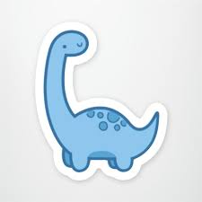
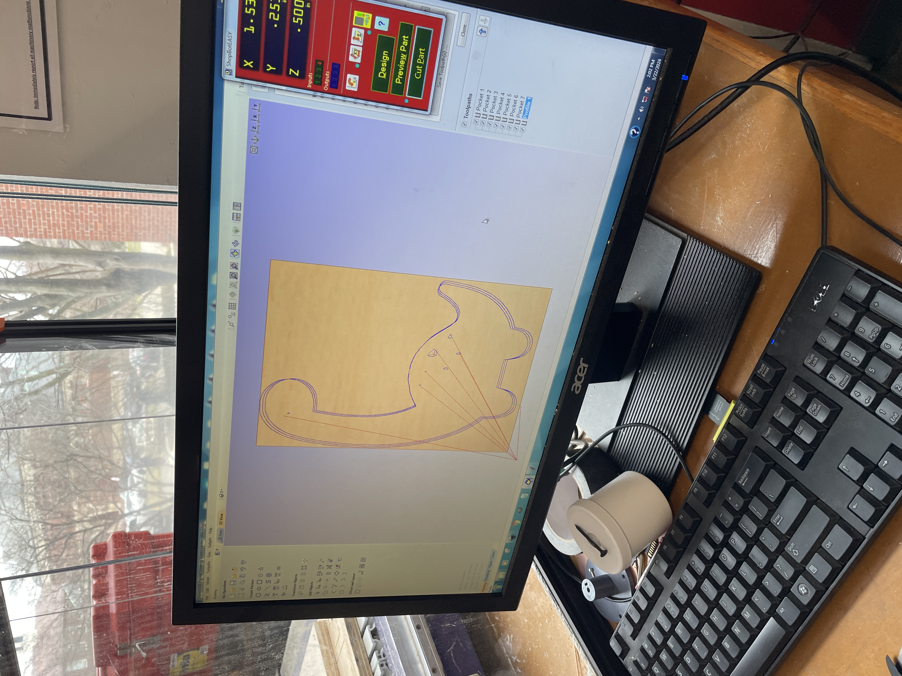
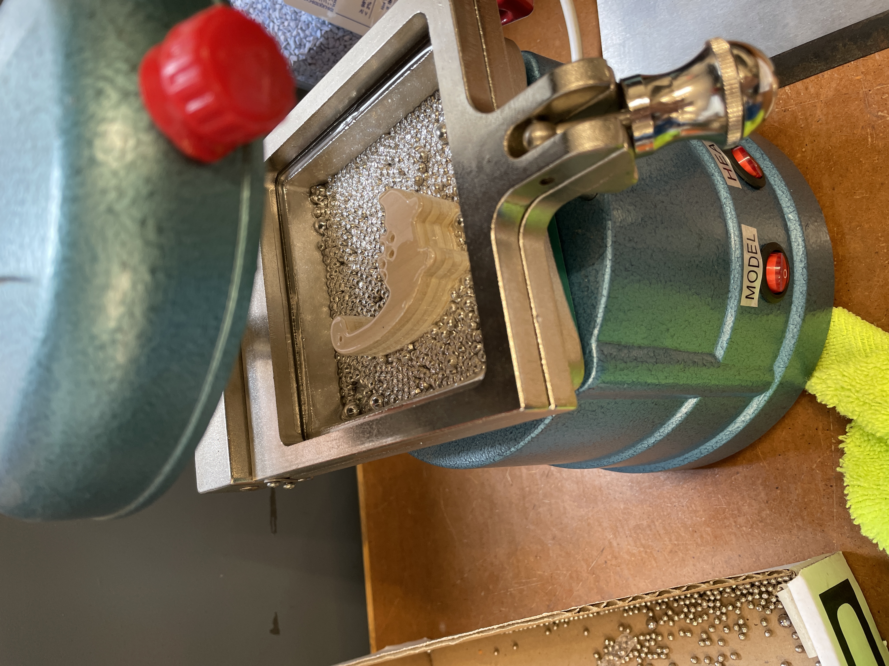
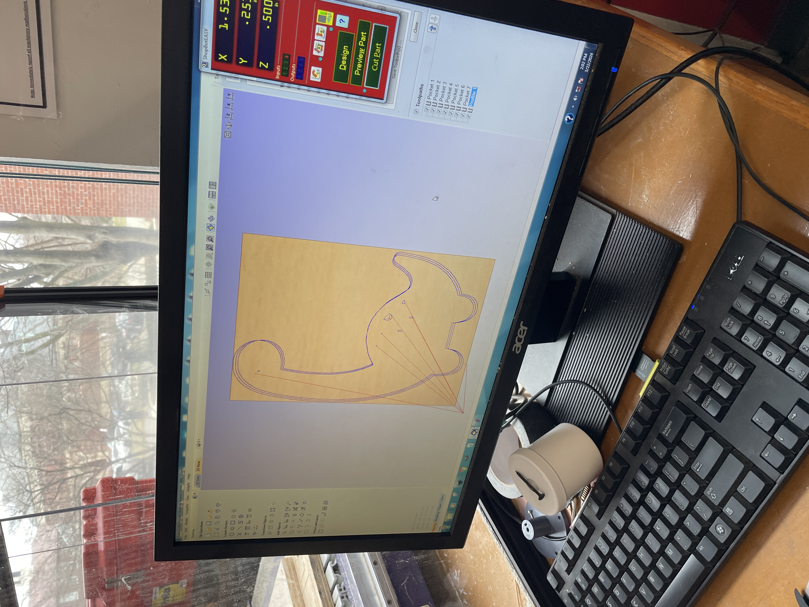
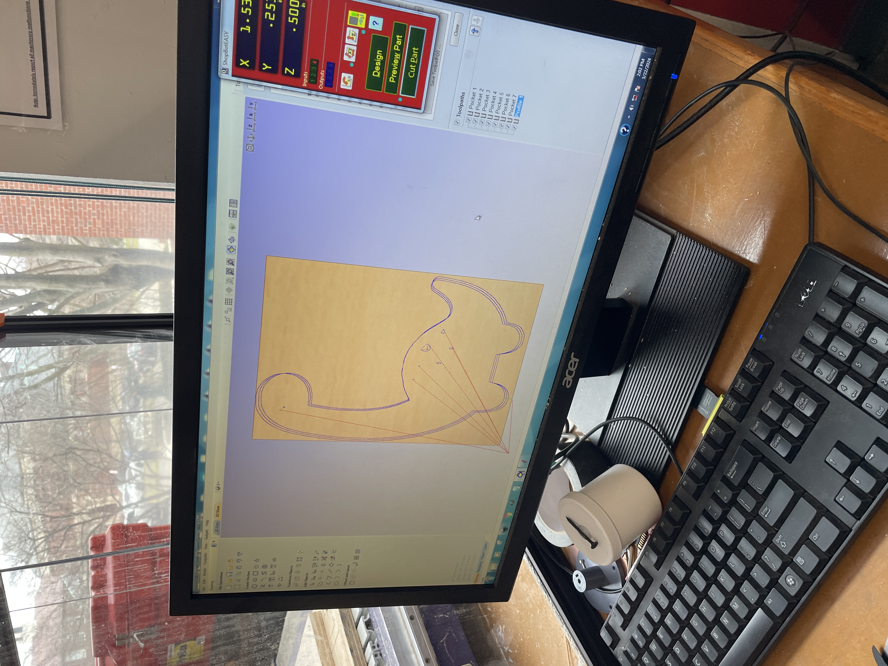
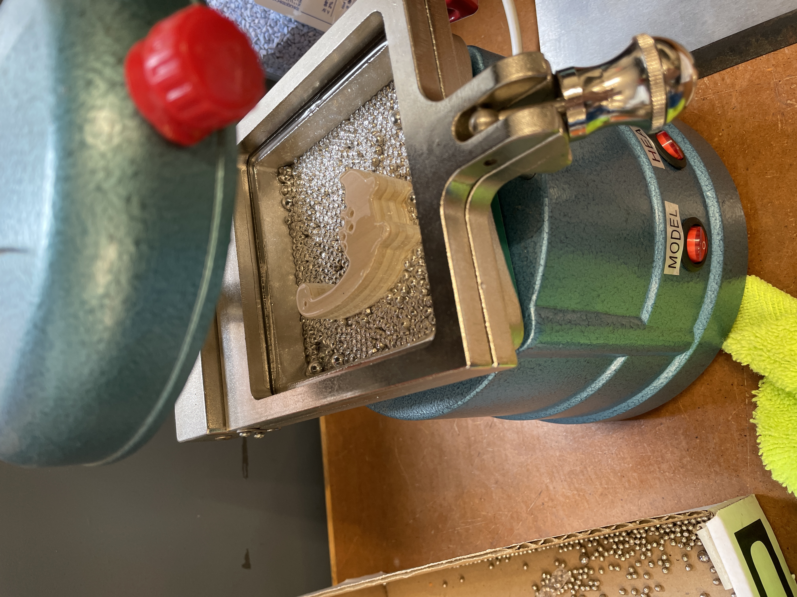
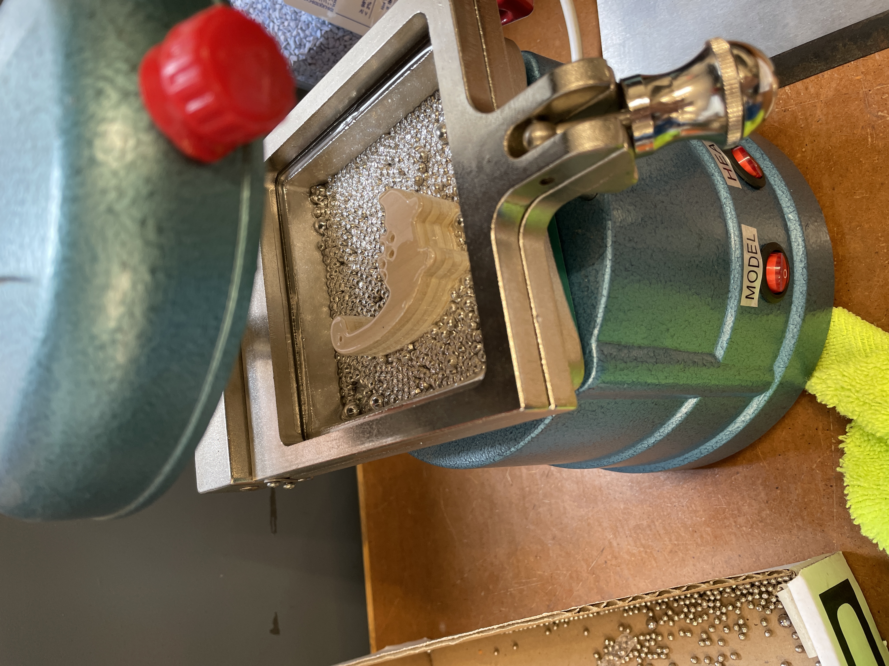

I spent a lot of time deciding what I wanted to make with the CNC mill since there were so many different choices and I take forever to make decisions, but I somehow ended up looking for a simple dinosaur cartoon that I found on google. I then used inkscape to turn this google image into a vector image and then moved the inkscape file to fusion so I could turn it into a dxf file. Then Bobby helped me use the actual CNC machine and edit my file on Aspire for the CNC mill. I wanted to make my dinosaur relatively small, but this meant that some of the smaller details on the dinosaur (the face and the dots on its body) were too small in the original file to be cut by the CNC machine (for example, the eye had to be enlarged and the mouth of the original dino was taken out altogether). some of the detail on the dino body was also not actually connected in closed shapes in the original dxf file, but Bobby figured out that we could just extend these shapes a bit outside of the overall dino outline and just make sure that the detail is cut out first so that object is not moving around when the detail is being cut out and the extra section of the detail going past the outline will not end up in the final dino.

Once the Aspire preview looked good, I turned the CNC machine on (I say "I" did it but really it was a we because Bobby helped me with everything). After doing an aircut to make sure cut would stay on the plywood that was attached to the machine, I did the actual dino cut.
After doing the first cut and vacuuming all of the wood splinters off of the surface, the dino was still stuck in the plywood board, so Bobby reset the depth setting for the cut so that it was slightly more than the measured thickness of the wood and ran the cut again. After the second run, it still had not cut all the way through--turns out we had measured the thickness to be smaller than it actually was. After the third run, the dino could be removed from the sheet of plywood! There were a lot of splinters poking out on the sides, but after sanding it down it turned out pretty cute :D Yay CNC success!
Post processing - Vacuum forming
I really liked watching Kassia do the vacuum forming in lab, so I decided that I would try to use the small vacuum forming machine for my dino to create a mold. I used whatever small piece of plastic happened to be sitting there (which maybe was a mistake cuz this plastic was super thick oops). I followed the instruction manual for the mini vacuum form machine--I put my dino in the machine surrounded by the metal beads, put the plastic piece underneath the heating plate, waited for the plastic to start sinking a bit, and then pushed the plastic over the dino.

It was all going pretty well (which I was pretty proud of because I don't usually do anything by myself) until after I took the piece out from the machine and realized that it was SUPER hard to get anything out from the plastic because it was so thick. The dino was super stuck in the mold, and there were a bunch of the small metal beads that were also stuck. I used a poker to poke out all of the metal beads (which took a while) and got help from Bobby and Kassia and Nathan to get Mr. dino out of the plastic mold. The dino tail was a bit of an issue when trying to pull the wood out from the plastic because it had a few bits that had broken off which made it more stuck in the mold.
For the next part of post-processing, I decided to use the mold to make a dino ice cube rather than making something in the lab because 1) I am impatient 2) there were still some tiny splinters stuck in the plastic, so I wanted to make something that I didn't have to save and 3) it was so hard to get the wood out of the mold I thought using ice might be better because it would maybe melt a bit so it would be easier to remove from the mold. I filled the mold about half way with water and put it in the freezer for a few hours before trying to remove the ice cube from the mold. Unfortunately, I was too impatient I think and the ice hadn't solidified super well, so it melted too quickly and left me with most of a dino ice cube (but not the head because that melted in my fingers when I was pulling out of the plastic mold). I decided to use my almost whole ice dino to water my completely dead plant (because somehow those two things go together in my head maybe because dinosaurs are extinct and so is my plant) :D

 



 
